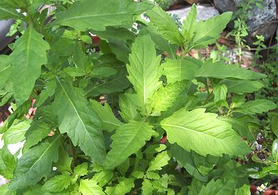

Epazote

[Stinkweed, Skunkweed, Wormseed, Jesuit's Tea,
Mexican Tea, Paico, Herba Sancti Mariæ (Spanish),
Chenopodium ambrosioides syn Dysphania ambrosioides]
A common weed in southern Mexico, Central and South America, Epazote is
now grown in the warmer parts of North America and sometimes becomes an
invasive weed here. Its main culinary use is for flavoring black beans
and to a lesser extent other recipes from southern Mexico and Central
America. It is reputed to prevent flatulence from eating beans and to
relieve a number of medical conditions. An oil extracted from the seeds
kills intestinal worms and is also an antispasmodic and abortifacient.
The smell of epazote is quite strong but extremely difficult to
describe. Leading spice expert Gernot Katzer says it smells to him like
epazote.
More on Amaranths.
Buying:
If you live in an area where there are a lot of
immigrants from southern Mexico and Central America, you'll find this herb
available erratically in markets that cater to them. Otherwise, you need
to grow it yourself. If you live in a reasonably warm climate, that's easy
- it grows enthusiastically and you may end up fighting it as a common
weed. It is quite seasonable so will not always be available.
Storing:
If fresh, it will keep loosely bagged in the
refrigerator for maybe 5 days. Dried epazote is considered "satisfactory"
if it is fairly fresh.
Subst:
There isn't anything close. Savory is often
suggested because it goes well with beans but the flavor is very
different.
Health & Nutrition:
In large quantities epazote is
toxic (as are many medicinal plants), but in the amounts used as a flavoring
herb no adverse effects have been reported.
ch_epazoz 090527 - www.clovegarden.com
©Andrew Grygus - agryg@clovegarden.com - Photos on this
page not otherwise credited are © cg1 -
Linking to and non-commercial use of this page permitted